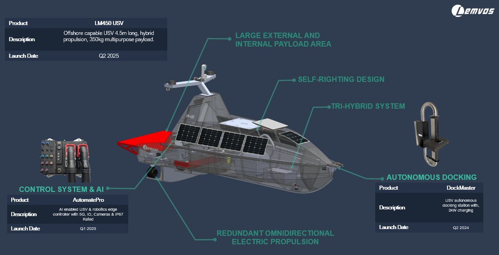
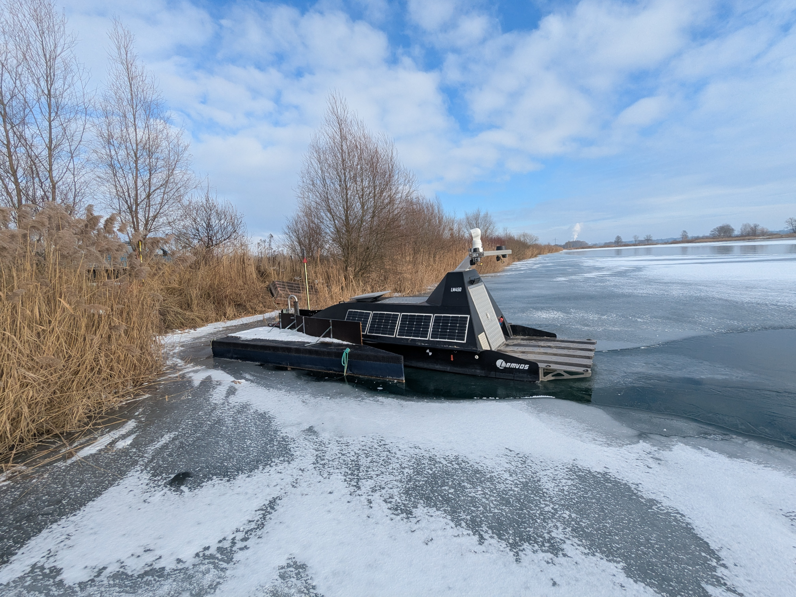

Interactive LM450 Digital Showcase
Scroll to rotate the 3D vessel and inspect the hull from multiple angles in a holographic-style viewer.
lm450-101-hull-sw-surface_v17.glb to the project root.
Objectives of the Service
AUTOSEA addresses three operational gaps: costly crewed surveys, diver exposure during hull inspections, and infrequent subsea monitoring. The service deploys the LM450 autonomous surface vessel with modular payloads and an autonomous docking concept to execute repeatable missions and return geo-tagged evidence. Users receive high-resolution maps, anomaly alerts and mission reports through a remote workflow that scales from harbour operations to offshore corridors.
Image credit: Lemvos GmbH (LM450 system view).
Users and Their Needs
AUTOSEA is used by organisations that require frequent, reliable maritime data with reduced staffing pressure and lower exposure to risk.
- Ports and hydrography teams: dependable bathymetry updates and safer navigation channels.
- Coast guards and security agencies: repeatable hull checks and surveillance patrol data.
- Offshore operators: regular monitoring around subsea assets and cable routes.
- Research and environmental teams: long-duration missions for consistent data capture.
| User Segment | Countries / Regions |
|---|---|
| Ports | Germany, Spain, Norway |
| Security organisations | Spain, EU waters |
| Offshore operators | EU and North Atlantic routes |
| Research institutions | Germany, Iberian Peninsula |

Service / System Concept
The service chain integrates vessel autonomy, edge processing, satellite connectivity and cloud reporting. Mission sensors collect bathymetry and inspection data, onboard software classifies features, and selected outputs stream through satellite links to remote operators. The architecture combines LM450, DockMaster docking and AutomatePro autonomy into a continuous loop: mission planning, autonomous execution, data transfer, and report delivery. This structure supports repeated operations over large maritime areas while keeping operational teams compact.
Image credit: Lemvos GmbH (AUTOSEA field operations).
Space Added Value
AUTOSEA combines space assets to make autonomous maritime operations practical at scale. GNSS/RTK positioning supports precise navigation and repeatable survey lines. Satellite communications provide beyond-line-of-sight command and near real-time delivery of mission outputs. This combination extends coverage, increases revisit rates and reduces dependency on crewed vessels for routine inspection tasks, creating a clear operational and cost advantage compared with conventional survey workflows.
Current Status
The project passed its mid-term review in Augsburg in February 2026. Saltwater demonstrations in Valencia validated autonomous vessel operation, docking workflow and mission data handling. The team has active letters of intent and pilot activities with user organisations, and is currently preparing additional demonstrations at major maritime events in 2026. The technical baseline and business case are in place, and ongoing work focuses on scaling pilots and operational readiness.
Contractors
| Role | Company | Country | Website |
|---|---|---|---|
| Prime contractor | Lemvos GmbH | Germany | lemvos.com |
| Programme support | European Space Agency | International | esa.int |